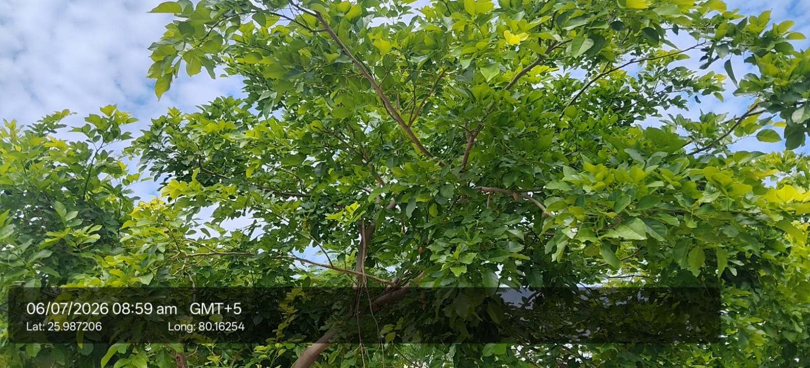

| Kingdom | Plantae |
|---|---|
| Family | Fabaceae |
| Genus | Pongamia |
| Species | Pongamia pinnata |
| Scientific name | Pongamia pinnata |
| Category | Trees |
| IUCN Red List | Least Concern (LC) — IUCN Red List LC |
Habitat & Growing Conditions
- Native to India and Southeast Asia. Common throughout India
- Very common in UP including Kanpur area in your coordinates. Found along roadsides, riverbanks, in parks, and planted for shade
- Thrives in tropical to subtropical climate. Highly tolerant to drought, salinity, and waterlogging
- Needs full sun. Grows in almost all soils - sandy, rocky, clay, even saline and alkaline soils
- Deciduous to semi-evergreen tree. Grows 8-25 m tall. New leaves are reddish-pink like in your photo, mature leaves are glossy dark green

Biodiversity Value
- A nitrogen-fixing legume; root nodules enrich soil, benefiting undergrowth and nearby crops.
- Flowers attract bees and butterflies; bitter seeds and foliage are avoided by grazers, so it survives on overgrazed land.
- Dense canopy and deep roots help stabilise riverbanks and field bunds.
Economic & Ecological Importance
- Biofuel: Seeds yield "Karanj oil" or "Pongamia oil" used for biodiesel. Also used in soap making
- Medicinal: Leaves, bark, root, and oil used in Ayurveda for skin diseases, wounds, rheumatism, and as anti-inflammatory. Oil is used in eczema and scabies. Note: Consult a healthcare professional before any medicinal use
- Agriculture: Excellent for soil improvement. Fixes nitrogen in soil. Leaves and cake used as green manure and bio-pesticide
- Timber & Fuel: Wood is hard and used for farm tools. Also used as firewood
- Ecological: Excellent avenue tree for roads and wasteland reclamation. Provides shade. Tolerant to pollution and coastal winds
- Fodder: Leaves used as cattle fodder in some areas
Medicinal Importance
- Leaves, bark, root and oil used in Ayurveda for skin diseases, wounds and rheumatism; oil applied on eczema and scabies.
Field Notes
- Synonym: Millettia pinnata
Visual record